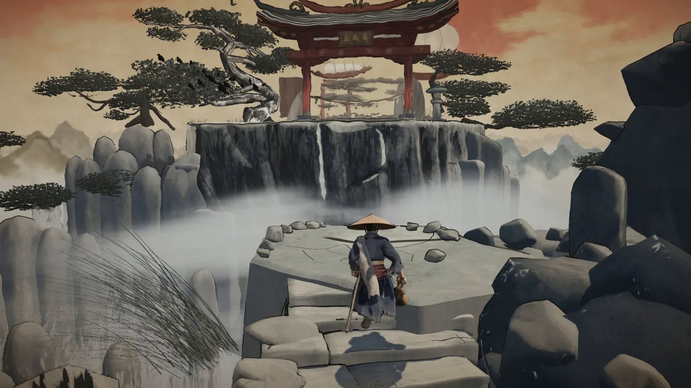
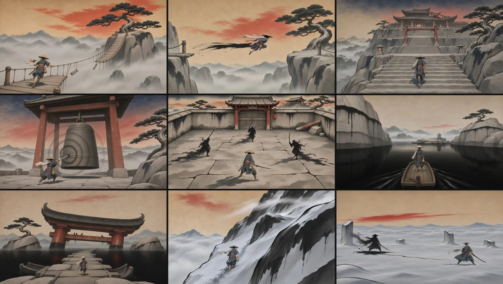
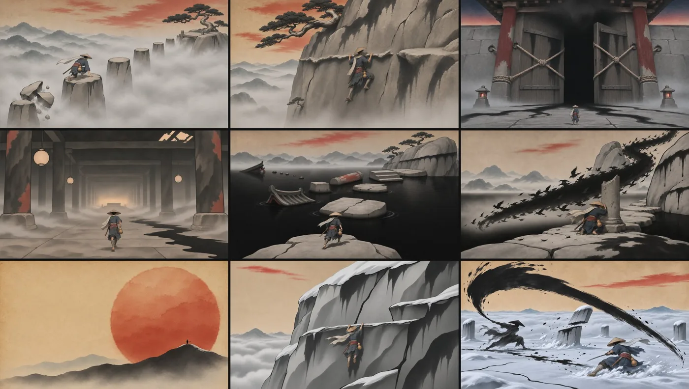

导读
Sumiro 是一款在浏览器里运行的水墨风 3D 游戏：戴斗笠的旅人在云雾山间解谜、跑酷、平台跳跃，随章节推进遭遇不同敌人（标题界面可见「第四章：静钟寺，卷轴 1/12」）。作者 Shikhar（@xikhar，简介「用 AI 做酷东西 · 3D / 游戏」）称整款游戏在约 24 小时内完成，技术栈为 Opus 5.5 + Flux 3 Max + GPT Image + Tripo + Blender + Three.js，并把流程拆成六步公开。
流程的关键是「先有一段视频，再把视频变成游戏」：用视频模型生成一段参考片，作为画风、世界和角色的唯一基准；再由 Claude Code 里的多个代理并行在 Blender 中重建场景、放进 Three.js；角色则从视频截图出发，经 GPT Image 四视图 → Tripo 一键建模/贴图/绑骨 → 由 Opus 加布料物理与动画。作者说灵感来自 @OdinLovis 的 Video2Game。
作者在回复里补充：花费约为 Claude Ultra 套餐额度的 20%，视频生成用的是 fal 近期的免费额度，Tripo 用了「几百点数」；帖中演示视频是让 Claude 操控角色录的，所以动作略僵；不打算商业化，「只是实验 AI 生成工作流」；选 Three.js 而非虚幻引擎，是因为画面较简单、便于网页分享。
⚠️ 核实：「24 小时」「20% 额度」「几百点数」均为作者自报，无法独立验证。Opus 5.5、Flux 3 Max 等模型名照录原帖。首帖称「完整流程与提示词见下」并标 (1/7)，但抓取到的帖串只有第 1–6 步，未见公开的提示词全文。作者另提醒浏览器需开启 GPU 加速，尚未在不同浏览器测试。试玩站点 xikhar.github.io/sumiro 可访问（200），但未找到公开源码仓库或许可证，因此本页不转载游戏代码与素材，仅用作者帖中配图。
原帖串全文中译
1/7
我用 AI 在 24 小时内做出了一款完整的原创游戏。
技术栈：Opus 5.5 + Flux 3 Max + GPT Image + Tripo + Blender + Three.js
现在人人都能做游戏了。完整工作流帖串和提示词见下：
（原帖附 97 秒演示视频，请至原帖观看）
第 1 步：生成一段视频
这段视频是在 @fal 上用 Flux 3 Max 做的。它是一切的参考：画面观感、世界、角色。
这个项目的灵感来自 @OdinLovis 的 Video2Game。
所用的参考视频：（见原帖）
第 2 步：搭建世界
对视频截图，在 Blender 里重建素材，放进 @threejs。
在 Claude Code 中使用动态工作流，让多个代理并行搭建和检查。

第 3 步：制作角色
截下他的画面，用 GPT Image 生成 4 张侧视图，再用 @tripoai 转成 3D 模型，让 Opus 加上布料物理和动画。
第 4 步：测试玩法
先玩一玩原型，确认能跑通，再继续往下做。
第 5 步：让代理搭出完整世界
首先，GPT Image 沿用现有画风为每个关卡生成概念图，每关最多 8 张。


第 6 步：把这些场景全部搭出来，然后迭代
玩一遍，报告 bug，让代理去修、去改进物件。循环往复。
每一张概念图都变成一个可以玩的 3D 关卡。
作者后续补充（同一帖串）
- 解谜、跑酷和平台跳跃是核心玩法。但随着游戏推进，你会和不同的敌人战斗，做更复杂的事。
- 可以在这里试玩：xikhar.github.io/sumiro
- 另外，帖子里的演示视频是 Claude 录的，所以是机器人在玩，看起来有点僵；真人玩起来灵活得多。
作者对评论的回复（节选）
- （问耗时与成本）大约一天，就像我说的。用了 Claude Ultra 套餐的 20%。fal 最近送了免费视频生成，我就用了。角色在 Tripo 上一次完成生成 + 贴图 + 绑骨（大概几百点数）。
- （问为何不用虚幻）我以前用过虚幻引擎，用它会更久。这款游戏画面大多比较简单，也方便在网页上分享。
- （问是否商业化）不会。如果打算变现或正式发行，我肯定会花更多时间。这是为了实验 AI 生成工作流。
- 是的，我还没来得及在不同浏览器和配置上测试。／确保浏览器能用上 GPU。
- （有人提到 Claude 的某工具）对，最近才发现。这是我第一次用它，没想到 Claude 能一次就把动画和一个像样的可玩游戏做出来。
启发
- 视频即设计文档：一段生成视频同时锁定美术、世界与角色，后续每一步都「对照截图」，减少风格漂移。
- 2D → 3D 的桥：GPT Image 多视图 + Tripo 建模绑骨，是目前常见的低成本角色管线（同库「余温 Hi3D 海战」用的是类似思路）。
- 代理并行 + 人来试玩：人负责玩和报 bug，代理负责修；可玩性验证放在扩展关卡之前。